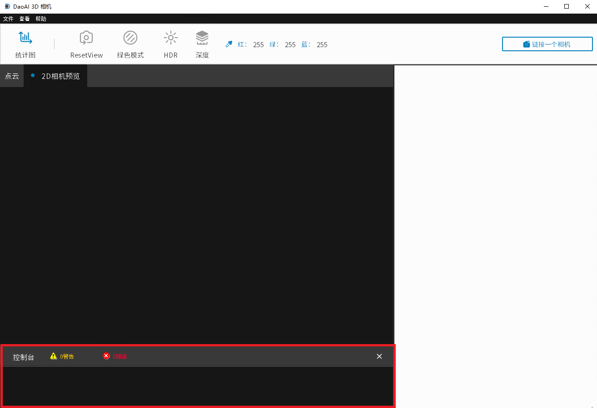
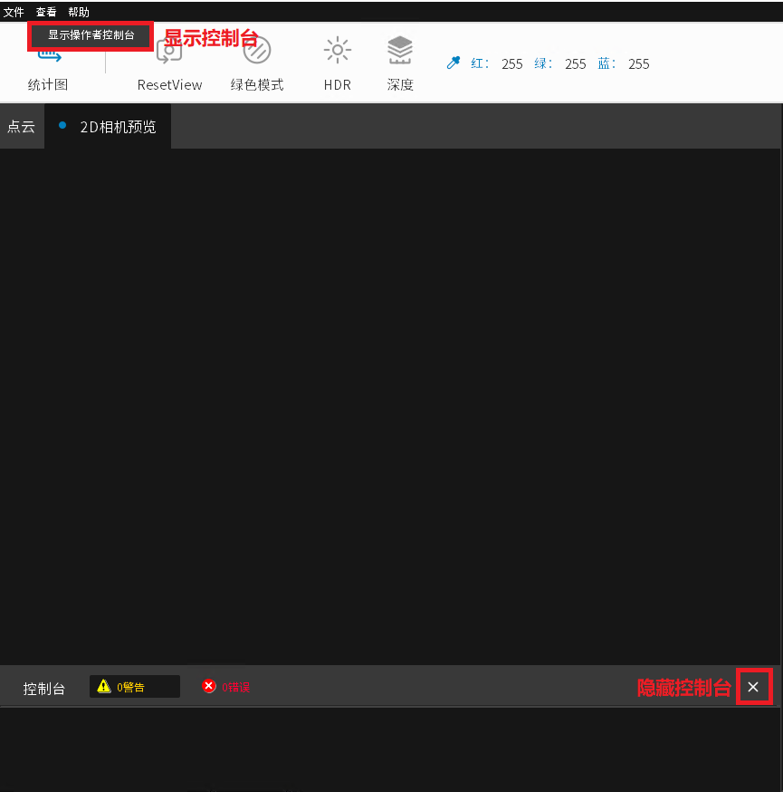

工具栏
相机工作室允许你保存和加载点云数据以及自定义捕捉设置。
保存和加载
加载点云文件
在左上角点击 “文件”→”加载三维数据”，选择点云文件（以.daf结尾）。注意，路径不能包含中文字符。当一个点云文件 当一个点云被显示出来时，说明加载成功。
保存点云文件
在左上角，捕捉图像生成点云后，点击 “文件”→”Save 3D data” ，输入新文件的名称，并点击保存。
保存设置（导出设置）
保存设置文件：点击左上角的 “文件”→”设置另存为”，输入新的设置文件的名称或选择被覆盖的设置文件，然后点击保存。
载入设置（导入设置）
确保三维摄像机已连接，点击左上角的 “文件 “和 “加载设置”，选择设置文件（以.cfg结尾）。请注意，路径不能包含 汉字。
(设置文件保存了三维摄像机在捕捉图像时的设置，包括主窗口中的所有选项和系统设置)
控制台
系统信息, 运行结果, Debug信息, 警告和错误信息会在控制台显示。
信息过滤
点击控制台栏上的黄色警告或者红色错误可以选择过滤掉其他信息, 只显示选择的的信息, 警告或者错误。
警告
在导出log文件时, 请不要选中控制台过滤器, 否则导出的log文件会只包含过滤后的内容。Log文件的写入要在关闭程序后完成, 在导出log文件时, 应当保持控制台过滤器是未选中状态直到程序关闭。
如何隐藏、显示控制台
可以点击控制台栏中的”X”图标来隐藏控制台。
显示控制点可以点击软件上方菜单栏, 查看 -> 显示操作者控制台。
文件下拉菜单
文件下拉菜单